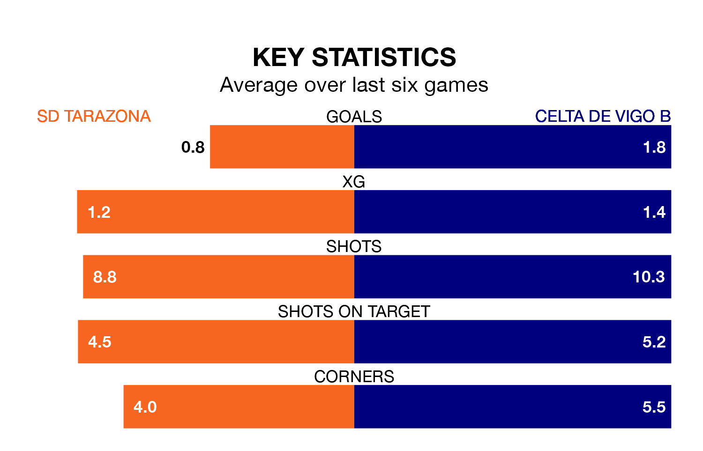

Celta de Vigo B face SD Tarazona on Saturday seeking to protect their long unbeaten run in Primera Division RFEF Group 1.
Celta are unbeaten in seven, with three wins and four draws, ahead of the 5pm kick-off.
They face a Tarazona team who have won one and drawn four over the same number of games.
With 50 goals in 29 games so far this season, Celta are the league's highest scorers with 1.7 goals per game. But they are conceding more than average too, letting in 31 goals at a rate of 1.1 per game.
Tarazona, meanwhile, are below average scorers, with 0.7 goals per game, compared to a league average of 1.0. They have conceded 0.9 goals per game.
In Alfonso González Martínez, the away team have one of the league's most on-form strikers so far this season. He has notched eight goals in 24 appearances, to sit second in the scoring charts.
His goal rate of one every 237 minutes is quicker than that of David Cubillas Peña, the hosts' top scorer with a goal every 434 minutes, and a total of four goals in 22 games.
Celta are third in the table after 29 games, of which they have won 15 and drawn six, earning 51 points.
Tarazona are 12 places behind Celta in 15th, with six wins and 12 draws putting them on 30 points.
Tarazona's last match was on Sunday, a 2-0 win against SD Ponferradina, with Alejandro Gil Gómez and Marc Trilles Gil getting the goals for Tarazona.
Celta beat CF Fuenlabrada 4-1 last time out, on Saturday, with Fernando López González (two) and González Martínez (two) on the scoresheet.
Updated: 12:16 (UTC), 25/03/24